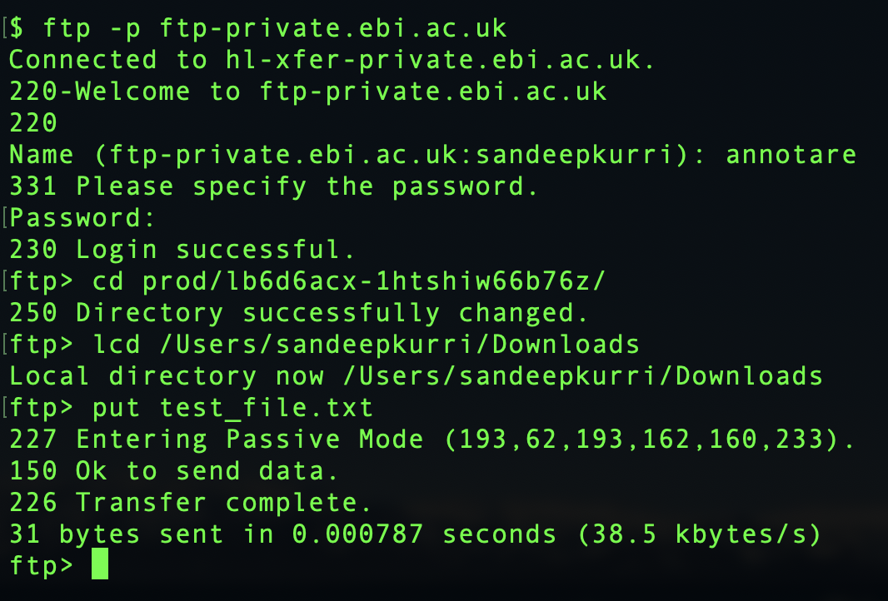

<section id="annotare-help">
  <div class="small-12 medium-9 columns">

		<h2>Send data files to ArrayExpress by FTP/Aspera</h2>

		<p>ArrayExpress provides a FTP repository for submitters to upload a large volume of data files associated with their experiment submissions.</p>

		<p><strong>Before you start transferring files, please note the following points:</strong></p>
		<ol>
			<li><strong>File preparation:</strong> Please check our guidelines on submitting files for a <a href='accepted_raw_ma_file_formats.html'>microarray experiment</a>, <a href='UHTS_submissions.html#HowToSubmit'>sequencing experiment</a> or <a target="_parent" href="https://www.ebi.ac.uk/fg/annotare/help/adf_quick_start.html">array design</a>. E.g. microarray data files should not be compressed, but fastq files from sequencing experiments must be individually compressed by gzip or bzip2.</li>
			<li><strong>Data privacy:</strong> All ArrayExpress submitters use the same account to upload files (see below). As most of the files are un-/pre-published, we make all uploaded files "private", which means you will not be able to see any files or directories already on the FTP site, including those that you uploaded or created. You will only be able to see your files if you are uploading to your personal Annotare submission directory. The FTP server is a temporary storage space, where we will keep your files for two months, counting from the date of file upload, after which we will delete them without warning. This is to comply with the <a target="_blank" href="http://www.ebi.ac.uk/ena/submit/read-submission#fair_use_policy">fair usage policy</a> of the disc space which we share with the European Nucleotide Archive.</li>
		  <li><strong>No whitespaces or special characters in file names:</strong> Make sure the file names are constructed only from alphanumerals [A-Z,a-z,0-9], underscores [_] and dots [.], with no whitespaces, brackets, other punctuations or symbols.</li>
			<li><strong>Finish your experiment submission (if applicable):</strong> Data files uploaded to ArrayExpress by FTP are only part of an experiment submission. The submission is only complete when experimental <em>metadata</em> (e.g. sample information and protocols) are also submitted to ArrayExpress using <a target="_parent" href="https://www.ebi.ac.uk/fg/annotare/login">Annotare</a>.</li>
			<li><strong>Email us (for non-Annotare submitters):</strong> When the transfer is complete, please email us at <a href="mailto:annotare@ebi.ac.uk">annotare@ebi.ac.uk</a> with the names of files transferred and a short note on what the files are for.</li>
		</ol>

		<br>

		<p>
		  <a href="#WindowsFTP">1. FTP upload instruction for Windows users (FileZilla)</a><br>
		  <a href="#TerminalFTP">2. FTP upload instruction for terminal/command prompt users</a><br>
		  <a href="#Aspera">3. Aspera upload instruction</a><br>
		</p>

    <p>&nbsp;</p>
    <hr />
		<h3 id="WindowsFTP">1. Transferring files via FTP using FileZilla (Windows Users)</h3>

		<p>We recommend using <a target="_blank" href="https://filezilla-project.org/">FileZilla</a> as an FTP client for Windows users. Windows File Explorer is not recommended as it may not support all FTP features and can be less secure.</p>

		<ol>
			<li>Download and install the <strong>FileZilla Client</strong> from <a target="_blank" href="https://filezilla-project.org/">filezilla-project.org</a>.</li>
			<li>Open FileZilla and enter the following in the Quickconnect bar at the top:
				<ul>
					<li><strong>Host:</strong> <code>ftp-private.ebi.ac.uk</code></li>
					<li><strong>Username:</strong> <code>annotare</code></li>
					<li><strong>Password:</strong> <code>annotare1</code></li>
					<li><strong>Port:</strong> <code>21</code></li>
				</ul>
			</li>
			<li>Click <strong>Quickconnect</strong>.</li>
			<li>In the <strong>Remote site</strong> pane (on the right), navigate to your submission's subdirectory. You can find the path in Annotare by clicking on <strong>"FTP/Aspera Upload..."</strong> (e.g., <code>/prod/ibtd1rmo-20r7k3g747sup</code>).</li>
			<li>To upload files, drag and drop them from your local computer (left pane) to the remote server directory (right pane).</li>
		</ol>


    <p>&nbsp;</p>
    <hr />
		<h3 id="TerminalFTP">2. Transferring files via FTP using Mac/Unix/Windows terminal (command prompt)</h3>

		<p>Make sure you are connected to the internet via a physical connection and <em>not</em> on a wireless connection.</p>

		<p>1. Open a Terminal window and change to the directory containing the data files.<br>
		2. Type: <code><strong>ftp -p ftp-private.ebi.ac.uk</strong></code> to connect to the FTP server.<br>
		3. Enter username <code><strong>annotare</strong></code> and password <code><strong>annotare1</strong></code>.<br>
		4. (<em>Annotare submissions only</em>) Change into the submission's subdirectory. You will find the path in Annotare by clicking on "FTP upload...". It should look similar to this: <code>/prod/ibtd1rmo-20r7k3g747sup</code>.<br>
		In the terminal window type <code><strong>cd</strong></code> followed by the path name.<br>
		5. Use the <code><strong>put</strong></code> command to place one file (or <code><strong>mput</strong></code> for multiple files) into the FTP directory.<br>
		To exit FTP, type <code><strong>quit</strong></code>. On exiting you will get a message printed to screen to tell you whether your transfer was successful.</p>

		<p></p>

		<p>Note: If you are using Mac, the file transfer may fail due to incompatible FTP settings of the standard FTP client on Mac (which is embedded in Finder). In this case you should be able to upload your files using an alternative FTP client, e.g. <a target="_blank" href="https://cyberduck.io/">CyberDuck</a>. If you have CyberDuck installed, you will be able to transfer files for your Annotare submission by clicking on the link with the FTP address in Annotare.</p>

    <p>&nbsp;</p>
    <hr />
		<h3 id="Aspera">3. Transferring files using Aspera command line client</h3>

		<p>Aspera is a commercial file transfer protocol that provides better transfer speeds than FTP over long distances.</p>
		<ol>
		    <li>Download the Aspera Transfer SDK from the following link: <a target="_blank" href="https://developer.ibm.com/apis/catalog/aspera--aspera-transfer-sdk/downloads/downloads.json">Aspera Transfer SDK - IBM API Hub - IBM Developer</a> (choose the required platform)</li>
            <li>Unzip/untar into a suitable directory, for example, C:\aspera on Windows or /opt/aspera on Mac or Linux</li>
            <li>You can ignore most of the directories that the SDK writes to your machine. Please navigate to the ./aspera/bin directory. This is the location where you will find the ascp binary. This directory is the one you will use to initiate Aspera transfers.</li>
            <li>You can now simply execute ascp to start your transfer with the EMBL-EBI server.<br>
		        <code><strong>ascp -P 33001 -c aes128gcm &lt;yourfile.txt&gt; annotare@fasp.ebi.ac.uk:&lt;your upload directory&gt;&#47;</strong></code></li>
		    <li>When prompted for a password enter <code><strong>annotare1</strong></code>.</li>
		    <li>(<em>Annotare submissions only</em>) You can find your upload directory from Annotare submission page, by clicking on <code>"FTP/Aspera upload"</code> button. It should look similar to this:
		        <code>prod/abcd1efg-hijk2lmno3pqr</code>.<br>
		        Proceed to import the uploaded files to your submission, as described <a target="_parent" href="https://www.ebi.ac.uk/fg/annotare/help/file_upload.html#ftp">here</a>.</li>
            <li>For more information on how to use Aspera to transfer files, please follow this article: <a target="_blank" href="https://embl.service-now.com/kb?id=kb_article_view&sysparm_article=KB0011565">How to transfer files to and from EMBL-EBI using IBM Aspera</a></li>
		</ol>
    <br>
	</div>

  <!-- side navigation -->
  {% include side_navigation.html %}

</section>
